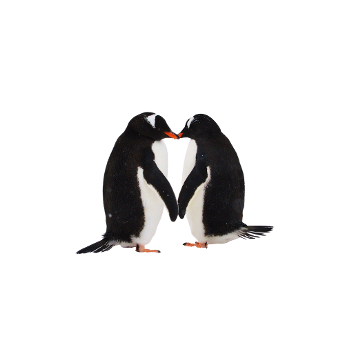
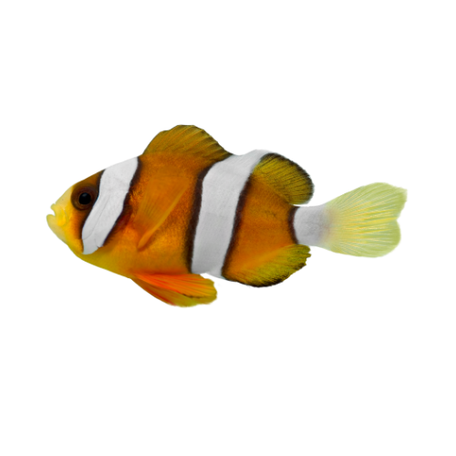
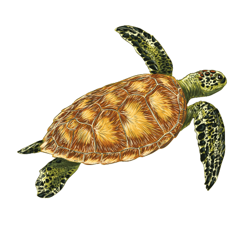

Vida marinha
Aves
As aves são animais vertebrados, de sangue quente (homeotérmicos), que possuem o corpo revestido de penas. Com cerca de 9000 espécies conhecidas, elas ocupam vários tipos de ambientes e, de maneira geral, dominam o ar.
Peixes
Os peixes são animais vertebrados, aquáticos, tipicamente ectotérmicos, que possuem o corpo fusiforme, os membros transformados em barbatanas ou nadadeiras (ausentes em alguns grupos) sustentadas por raios ósseos ou cartilaginosos, guelras ou brânquias com que respiram o oxigénio dissolvido na água (embora os dipnóicos usem pulmões) e, na sua maior parte, o corpo coberto de escamas.
Répteis
Os répteis (latim científico: Reptilia) constituem uma classe de animais vertebrados tetrápodes e ectotérmicos, ou seja, não possuem temperatura corporal constante. São todos amniotas (animais cujos embriões são rodeados por uma membrana amniótica), característica que lhes permitiu ficarem independentes da água para reprodução, ao contrário dos anfíbios. Os répteis atuais são representados por quatro ordens: Testudines, Crocodylia, Squamata e Rhynchocephalia.
